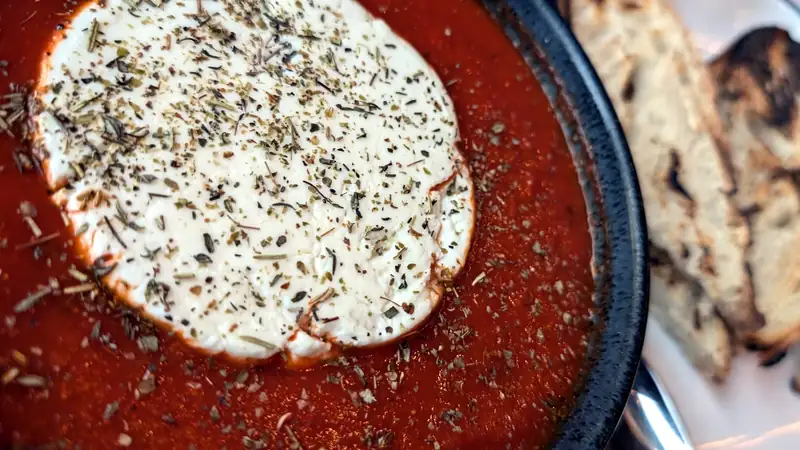
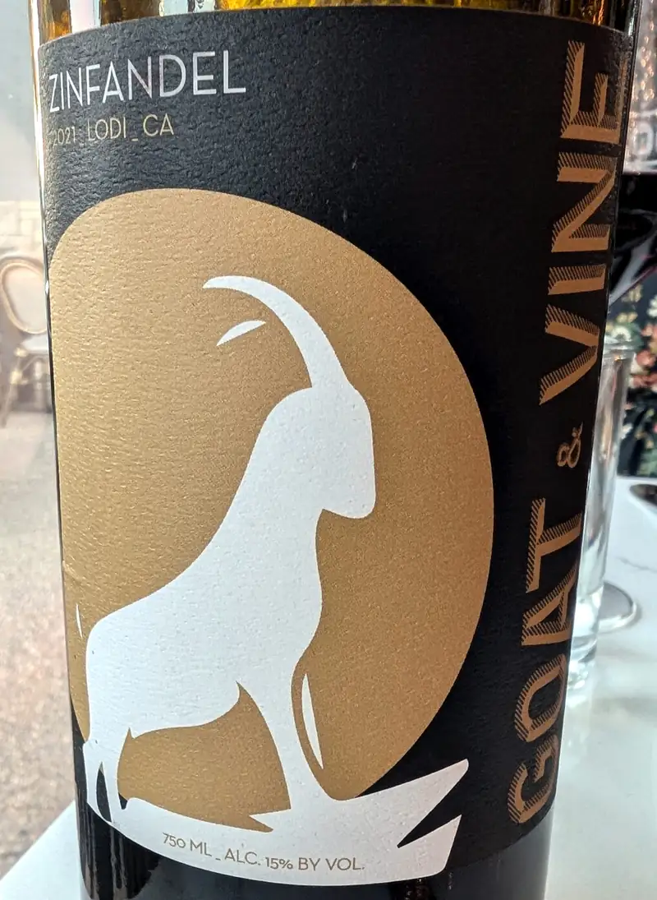
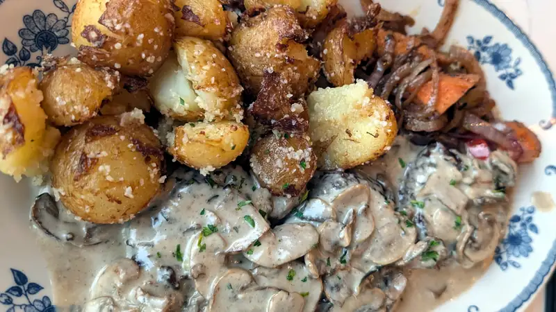
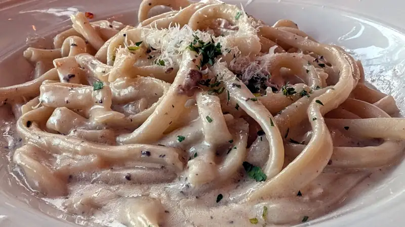

Restaurantes - Vine And Goat
Dicen... diiiicen... que para una ocasión especial no deberías ir a un lugar que no conoces, pero pues.. a la vez.. también nos gusta experimentar y probar lugares nuevos, así que ahí vamos y probamos... por más reviews que lea uno y por más estrellitas que tenga un lugar, no hay nada que te garantice una experiencia grata...
Y quiero ser lo más objetivo posible y ponerle un aviso previo a esto, de que el nivel de exigencia lo ponemos proporcional a lo "fancy" que se cree el lugar.. me quieres cobrar $40 por platillo? te voy a exigir a ese nivel... y pues... ok, la comida está buena, la entrada, un queso feta horneado con salsa de tomate. Bastante bueno
{kind=link}

El vino? que dicen que lo hacen ellos mismos, pero hey, cuando te llevan la botella que pediste como botella completa, así sin corcho o taparroscas... este... "dicen" que lo hacen ellos, o lo sacan de la caja de franzia, quien sabe.
{kind=link}

El filete en salsa madeira... sabroso y al término requerido
{kind=link}

La carbonara? .. no auténtica auténtica, pero tampoco se hacen pasar por restaurante italiano, así que... eh, ps pasable porque estaba buena..
{kind=link}

Ya, ya... hice mi mejor esfuerzo por decir solamente cosas buenas de la comida :P.. porque sí, la neta, la comida está buena, MUY buena, así como para lo que cobran? hmm dado lo que probablemente tienen que pagar de renta.. bueno pues, justificable. Pero hay cosas imperdonables que la neta, ni en los lugares de comida rápida suceden, ok, no sirven vino en el McDonald's de aquí, pero en el de Francia sí, y deja te digo que pura madre te dan el envase abierto vendiéndolo como nuevo. Ya, ya, pues.. además de la botella que no abrieron en la mesa, ya nom'as voy a enumerar sus _faux pases_ para no entrar en TANTO detalle, pero lo de la botella es p sacrilegio para un lugar que se las dá de muy de vinos.
- Copas sucias, y no de lavatrastes, con polvo y manchas.
- La servilleta que me tocó habrá sido muy de tela, pero manchada y al desdoblarla le salió una surrapa de pan.
- Muy orgánica la cosa, había un grillo en una de las mesas "lounge" de la entrada.
- Un lugar de vinos que no capacita a sus meseros con maridajes? Vamooooooos!!!!! 'ngao
En fin... mira, si no eres tan mamón como yo, y quieres comida buena, no-tan-barata... pero muy buena.. ps ve.